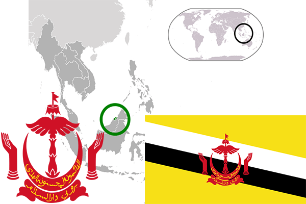

To`liq nomi: Bruney-Darusalam
Region: Janubiy-sharqiy Osiyo
Qonunchilik shakli: Mutloq monarxiya
Mustaqillik kuni: 1-yanvar 1984 yil (Birlashgan qirollikdan)
Poytaxti: Bandar-Seri-Begavay
Maydoni: 5 765 km² (dunyoda 163 -o`rinda )
Chegaradosh davlatlari: Malayziya
Aholisi: 401 890 (dunyoda 174 -o`rinda ) 2011 -yil roʻyxat
Aholi zichligi: 67,3 /km²
Aholining o`rtacha yoshi: 75,35 yil ( 77,6 ayollar, 73,1 erkaklar)
Rasmiy tili: Malay tili
Dini: 65% musulmon, 15% buddist, 10% xristianlar
Pul birligi: bruney dollari
Telefon prefiksi: +673
Internet domen: .bn
Xalqaro tashkilotlarga a`zoligi: BMT (1984 –yildan), Osiyo-Tinch okeani iqtisodiy hamkorlik tashkiloti
Dengiz va okeanlarga chiqishi: Janubiy-Xitoy dengizi
YIM: Butun: $ 22 mlrd, Jon boshiga: $ 71 759 (2012 - yil roʻyxati)
Yirik shaharlari: Bandar-Seri-Begavay